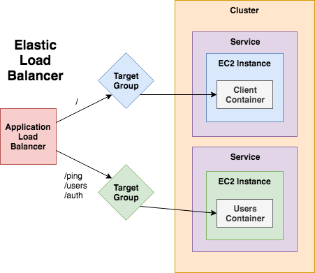
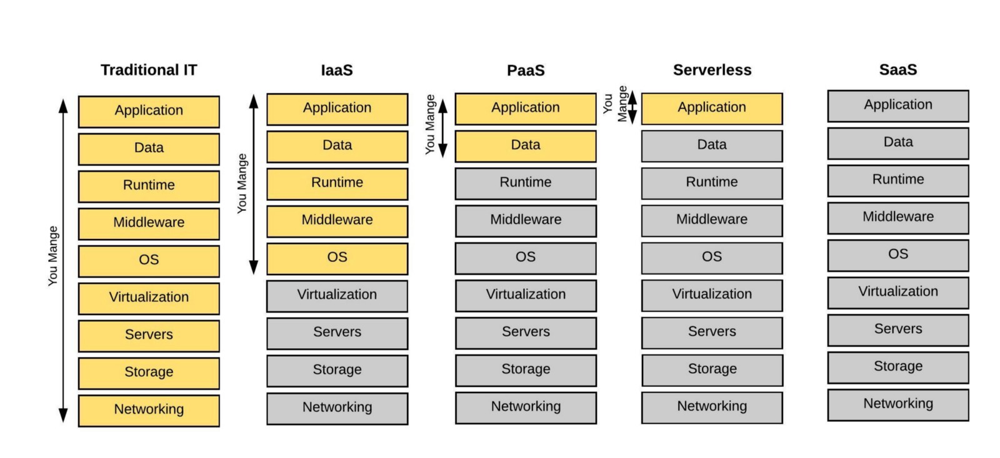
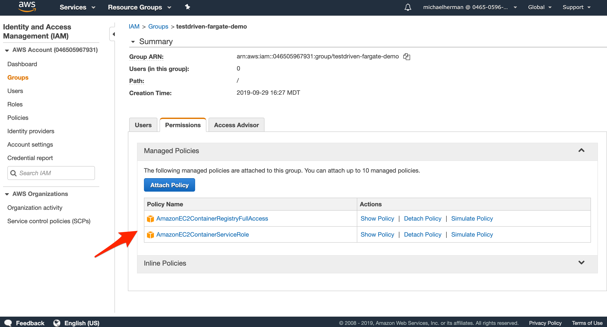

class: center, middle <h1 style="font-size:90px;margin-bottom:0px">Flask on Fargate</h1> <h3 style="margin-top:0px">- Deploying Flask to AWS Fargate -</h3> <img src="images/fargate.png" alt="aws fargate logo" style="width:20%;"> <br> <div> <span style="vertical-align:60%;">Presented by <em>Michael Herman</em></span> </div> --- ### Agenda -- ##### (1) Intro 1. About Me 1. Objectives -- ##### (2) Theory 1. EC2 vs ECS 1. ECS with Fargate -- ##### (3) Practice 1. Project Overview 1. Local Setup 1. AWS Prerequisites 1. ECR Image Registry 1. ECS with Fargate -- ##### (4) Next Steps / Questions --- class: center, middle ## Intro --- ### About Michael ``` $ whoami michael.herman ``` <p style="margin:0"></p> -- #### Engineer, Educator, Entrepreneur from Denver, CO 1. Senior Software Engineer at [Eldarion](https://eldarion.com/) 1. All the things at [TestDriven.io](https://testdriven.io) <a href="https://testdriven.io"> <img src="images/mobile_image.png" style="max-width: 15%; padding-top:5px; box-shadow: none;" alt="testdriven.io"> </a> -- #### Also 1. Founder and Organizer of [Denver Node.js Meetup Group](https://www.meetup.com/Node-js-Denver-Boulder/) 1. Former Lead Instructor at [Galvanize](https://www.galvanize.com/) 1. Co-founder/author of [Real Python](https://realpython.com) 1. 😍 - [tech writing/education](http://mherman.org), [open source](http://github.com/mjhea0), [financial models](http://www.starterfinancialmodel.com/), [radiohead](http://radiohead.com/) --- ### Objectives -- By the end of this tutorial, you should be able to... -- 1. Explain the following AWS services and why you may need to use each of them -- EC2, IAM, ECR, ECS, and Fargate -- 1. Describe the similarities and differences between EC2, ECS, and Fargate -- 1. Explain what container orchestration is and why you may need to use an orchestration tool -- 1. Spin up a Flask app locally with Docker -- 1. Utilize ECR image registry to store Docker images -- 1. Configure Fargate to run a Flask microservice --- class: center, middle ## Theory --- ### EC2 and ECS -- #### EC2 [EC2](https://aws.amazon.com/ec2/) ("Elastic Compute Cloud") is a virtual machine in the cloud. It's perfect for running a single app or Docker service. While you can run multiple apps or services, it's better to use a different AWS product in order to scale each app vertically and horizontally more efficiently. In the Docker world, you'll need to use a container orchestration tool. <p style="margin:0;"></p> -- #### What is container orchestration? As you move from deploying containers on a single machine to deploying them across a number of machines, you will need an orchestration tool to manage the arrangement and coordination of the containers across the entire system. <p style="margin:0;"><img src="images/docker.png" style="max-width:8%;" alt="docker logo"></p> --- ### EC2 and ECS (continued...) -- #### ECS [ECS](https://aws.amazon.com/ecs/) ("Elastic Container Service") is a container orchestration tool used for managing and running Docker-based containers. Put simply, it's a tool for running and managing containerized apps on groups of EC2 instances. -- *ECS is great, but it's complex...* -- <p style="margin-top:25px;"></p> --- ### ECS with Fargate -- ECS with [Fargate](https://aws.amazon.com/fargate/) is a container orchestration tool used for running Docker-based containers without having to manage the underlying infrastructure. 1. **vs ECS (with EC2)** - less complex, *probably* more expensive since Fargate abstracts out the underlying architecture 1. **vs Lambda** - Fargate get things a bit closer to Lambda without a huge app refactor, more control, *probably* quicker, *probably* cheaper -- **Questions you need to ask**: 1. When looking at costs, are you taking indirect costs like maintenance and upgrades into account? 1. How much control over the environment do you need? Are you willing to take on more operational costs to maintain a more flexible environment? -- <p style="margin-bottom:0"> <a href="images/iaas-paas.jpeg">  </a> </p> <p style="margin-top:0;"><small>(<a href="https://medium.com/sajari/bigquery-a-serverless-data-warehouse-9a4d623f3f43">Source</a>)</small></p> --- ### ECS with Fargate (continued...) In summary... -- **Fargate Advantages** The key advantage is the increased velocity (infrastructure is managed by someone else, so devs can focus on writing business-valuable code) Put another way, the focus is solely on the containers (your application) -- **Fargate Disadvantages** 1. Decreased transparency (infrastructure is managed by someone else) 1. Less control 1. Vendor lock-in 1. Cost <img src="images/fargate.png" alt="aws fargate logo" style="width:20%;"> --- class: center, middle ## Practice --- ### Project Overview -- **RESTful API** | Endpoint | HTTP Method | CRUD Method | Result | |-------------|-------------|-------------|-----------------| | /users | GET | READ | get all users | | /users/:id | GET | READ | get a single user | | /users | POST | CREATE | add a user | | /users/:id | PUT | UPDATE | update a user | -- **Tools and Technologies** - Python/Flask - Postgres - Docker - Gunicorn - Pytest -- **Resources** - Code: https://gitlab.com/testdriven/flask-tdd-docker/tree/aws-fargate - Course: https://testdriven.io/courses/tdd-flask/ --- ### Local Setup -- Build the images and spin up the containers: ```sh $ docker-compose up -d --build ``` -- Create and seed the database: ```sh $ docker-compose exec users python manage.py recreate_db $ docker-compose exec users python manage.py seed_db ``` Test: http://localhost:5001/users -- Run the tests: ```sh # pytest $ docker-compose exec users pytest "project/tests" -p no:warnings # flake8 $ docker-compose exec users flake8 project # black $ docker-compose exec users black project --check # isort $ docker-compose exec users /bin/bash -c "isort project/*/*.py" --check-only ``` --- ### AWS Prerequisites -- - An [AWS account](https://aws.amazon.com/free/) -- - [AWS CLI](https://aws.amazon.com/cli/) installed: ```sh $ pip install awscli ``` -- - [IAM](https://aws.amazon.com/iam/) account with the following group-level policies: - `AmazonEC2ContainerServiceRole` - `AmazonEC2ContainerRegistryFullAccess`  --- ### ECR -- - From the AWS console, navigate to the [ECR](https://us-west-1.console.aws.amazon.com/ecr/) dashboard and create two new Image repos: - `fargate-users` - `fargate-users-db` -- - Log in to ECR: ```sh $(aws ecr get-login --no-include-email --region us-west-1 --profile fargate) ``` -- - Tag and push the images to ECR: ```sh $ docker build \ -f Dockerfile.fargate \ -t <AWS_ACCOUNT_ID>.dkr.ecr.us-west-1.amazonaws.com/fargate-users:latest \ . $ docker push \ <AWS_ACCOUNT_ID>.dkr.ecr.us-west-1.amazonaws.com/fargate-users:latest $ docker build \ -t <AWS_ACCOUNT_ID>.dkr.ecr.us-west-1.amazonaws.com/fargate-users-db:latest \ ./project/db $ docker push \ <AWS_ACCOUNT_ID>.dkr.ecr.us-west-1.amazonaws.com/fargate-users-db:latest ``` --- ### ECS with Fargate -- #### Setup To set up ECS, we need to configure the following pieces: -- 1. **Task Definitions**: think of them as blueprints, similar to a Docker Compose file -- 1. **Cluster**: groups of EC2 instances where the services run -- 1. **Service**: instantiated Task Definitions -- #### Task Definition 1. **Type** - Fargate 1. **Total** memory - 2GB 1. **CPU** - 1vCPU 1. Add Container - name it, use the ECR image, expose port 5000 --- ### ECS with Fargate (continued...) -- #### Cluster 1. **Template** - networking only 1. Name it -- #### Service 1. **Type** - Fargate 1. Task Definition 1. Cluster 1. Service name 1. Number of tasks 1. Security Group -- #### Test! --- ### That's it! What's next? -- ##### Check your understanding 1. Spin up a containerized Postgres service in the cluster 1. Configure a load balancer (ALB) and add health checks to the service 1. Replace the Postgres container with RDS -- ##### Resources 1. Code: https://gitlab.com/testdriven/flask-tdd-docker/tree/aws-fargate 1. Course: https://testdriven.io/courses/aws-flask-react/ -- ##### Contact Info 1. [michael@mherman.org](mailto:michael@mherman.org) 1. [mherman.org](https://mherman.org) 1. [@mikeherman](https://twitter.com/mikeherman) -- ##### Questions? ✌️